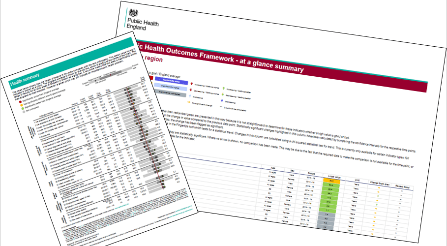
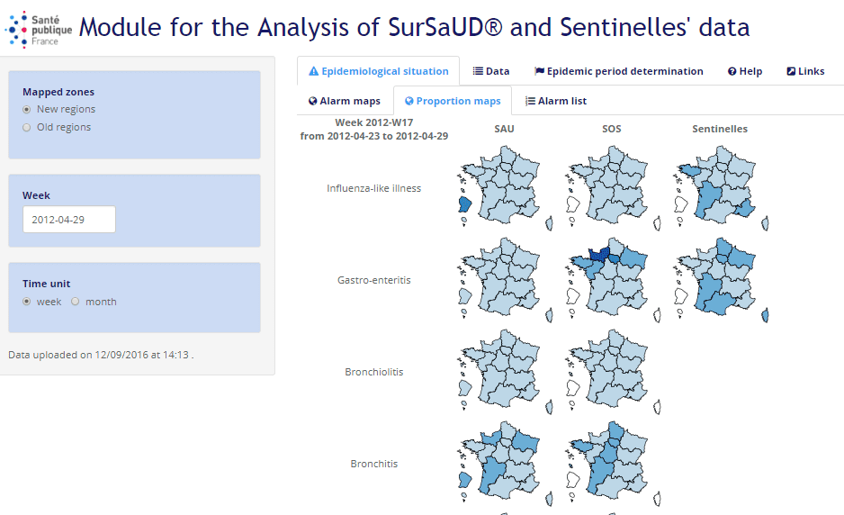

My journey with R began when a colleague of mine said to me that there was software out there, called R, where you could plot all the fields in a matrix of data against each other with one function to visualise any relationships within the dataset. I remember thinking how powerful that could be but never had a chance to investigate it as we weren’t allowed to install R on our work machines.
Four years and two jobs later, I was in a conversation with my new colleagues about how interesting it would be to see which variables in a dataset correlate with one another. I remembered R and my previous conversation, and embarked on a journey to find that function. This journey has resulted in transforming my view of data analytics.
In this blog post I try to describe what I’ve witnessed as a fairly typical journey through the R and RStudio toolkit, especially for users who come from a background of using Excel as their main analytical tool. I hope that if you are on the journey this blog can help with future steps.
Users generally start by typing something like 4 + 2 into the console. After some lengthy testing of combining objects, creating vectors and dataframes they decide they have done enough and close RStudio.
Save workspace image to ~/.RData?
What does that mean? It dawns on the user that R has some major concepts that they will need to get their head around before feeling comfortable with it.
Writing scripts
Excitement factor: 1
Having got comfortable with a few functions users want to remember how to use certain functions. If users have an understanding of Excel macros it is still hard to see what R can offer over Excel.
ggplot2
Excitement factor: 5 (eventually after weeks of frustration)
Having done some analysis users learn about the potential of ggplot2 for visualisations. In reality, ggplot2 is a whole journey in itself…theming charts, playing with legends, changing the order of categories (ggplot2 could be a blog in itself). What the package can do though is produce extremely powerful and appealing visualisations.
RMarkdown documents

Screenshots of Public Health England spine chart report and PHE Outcomes Framework
Soon, users discover they can intersperse scripts and commentary in RMarkdown documents, which makes it very easy to share outputs with other people (including non-R users). This tiny additional skill has huge benefits.
It is also very exciting that the same code can produce a Word document, an html document and a pdf document (after a little fiddling with extra installations, which should be made easier following the introduction of tinytex). Recently, the same code can even be used to produce PowerPoint presentations.
It is difficult to share RMarkdown documents so other people can “knit” them. There are issues around working directories and imported files that are saved in a location other people can’t access. Here are some normal conversation starters for people in this situation:
“Save these files in the same folder as the markdown document…”
Or
“Set your working directory to here and save this file here…”
Users may have heard of projects at this point but never reaped their benefits. Projects solve many of these problems.
There are the added benefits of being able to work on multiple projects at the same time and being able to pick up a project where a user has left off.
Shiny
Excitement factor: 5

Screenshot of a Shiny app showing epidemiological maps of France
Users generally are quite confident at this point. They can make stories out of data and share them with others. The natural next step is to try and make the stories interactive using Shiny. Shiny seems like it should be similar to RMarkdown, but it isn’t and it is hard. Some users persist and some go back to their comfort zone.
Coding is sometimes compared to an art, where the objective is to write some ‘beautiful’ code in the shortest, most understandable and robust form possible. This is where functional programming helps. Users find themselves repeating lines of code multiple times throughout analyses or projects. Writing functions helps to save time, “prettify” code and reduce its length.
Packages
Excitement factor: 4
library(cowsay)say("Good things come in small packages", by ="chicken")
____________________________________
< Good things come in small packages >
------------------------------------
\
\
_
_/ }
`>' \
`| \
| /'-. .-.
\' ';`--' .'
\'. `'-./
'.`-..-;`
`;-..'
_| _|
/` /` [nosig]
When many functions revolve around a vaguely similar topic they can be grouped into a package. What’s more, other people are also probably doing, or would like to do, very similar tasks. Users can put their related functions together into a package and make that package available for others.
A few pointers and plugs here:
It is easy to write a package, especially using this guide written by Hadley Wickham.
One of the goals of my first package was to contribute to open science. rOpenSci provides a great repository of packages that performs this function.
Fork in the road
This is generally the point where R experiences diverge from each other. The different paths may be:
Analysis – using the skills developed to perform analysis
Analytical blogs – publishing analysis and stories. RPubs offers all R users the ability to publish their markdown documents publicly
Mastering code management – using software like Git, users can share code to be transparent and reproducible. This method also facilitates collaboration well
Writing more packages – as an organisation, packages perform a great function to standardise processes and make people have easier R experiences
Contributing to other people’s packages – all R packages are developed in the open. Generally, anyone has the ability to take someone’s code, change it, and offer the change up to the original developer to include into future version of the code
Writing books – using RMarkdown alongside bookdown
Learn Python and start again 😉
PS
The function I was looking for that started my R journey was pairs():